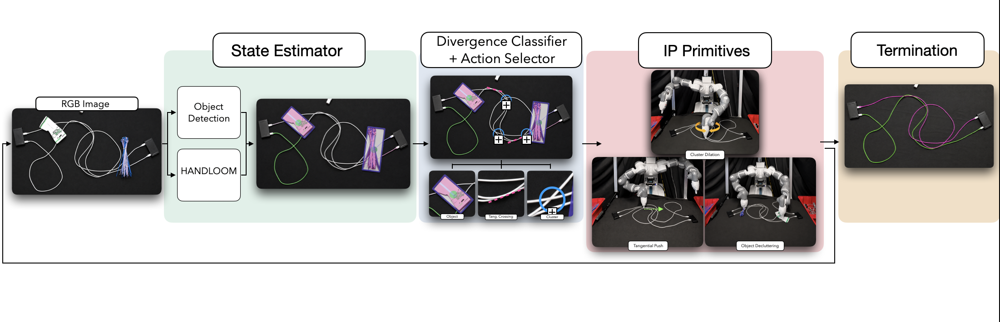
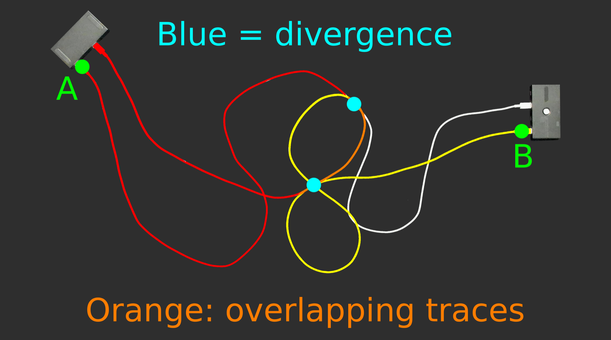
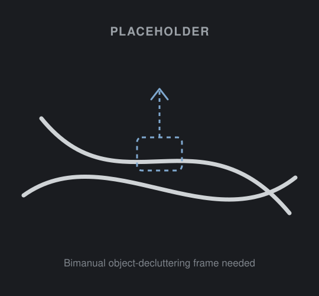
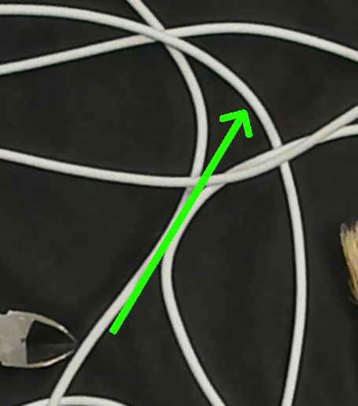
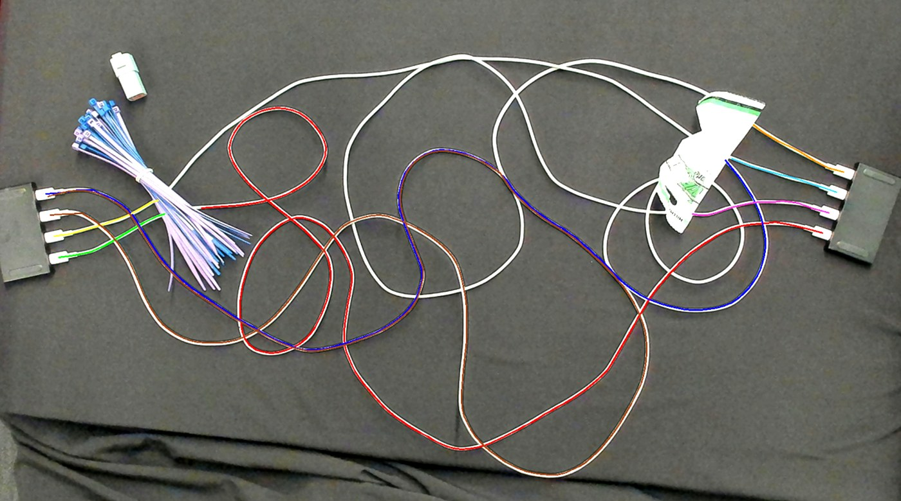
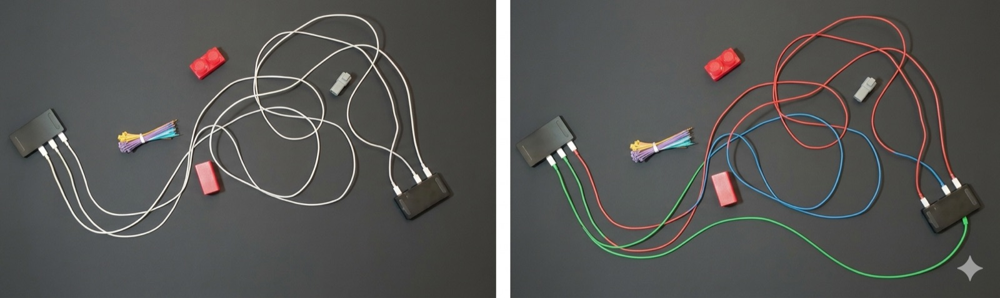

The monochrome tracing problem
When cables differ in color, each one can be followed by its hue. Monochrome cables remove that cue: every strand looks the same, so at each crossing it is ambiguous which way a given cable continues. The system must instead reason about geometry, and where the geometry is ambiguous, resolve it by interacting with the scene. In the figure below, the only reliable visual anchors are the detected connector endpoints.

A Faster R-CNN detects the connectors (green). TRACE finds which endpoint connects to which and recovers the correct trace for each cable.
The TRACE pipeline
TRACE builds on the MANIP framework for modular interactive perception. Each iteration is a closed loop of three stages: estimate the state of the cables, identify where that estimate is uncertain, and act to reduce the uncertainty. The system then re-images the scene and repeats until the trace is topologically consistent.

Fig. 2 — the TRACE architecture (MANIP framework). The loop re-images and re-traces until every cable is topologically consistent, up to Tmax = 10 iterations.
The state estimator pairs a Faster R-CNN connector detector with the HANDLOOM 1.0 single-cable tracer, applied from both ends of each cable. The Meta Policy Selector then combines three signals that the prior heuristic baselines do not consider jointly — object masks, a local cable-density estimate, and the consistency between the two traces — to select an appropriate action. The method operates on monocular RGB images alone, without depth, stereo, or range data.
Bi-directional tracing & divergence
TRACE traces from every connector, which yields two independent estimates for each cable. The point at which the estimate from connector A and the estimate from connector B cease to agree is, by construction, where the cable’s identity is uncertain — a divergence point. The steps below illustrate this.
Identifying these points proceeds in two passes. The first checks reciprocal consistency, flagging traces whose forward and backward directions fail to overlap. The second analyzes each flagged location and classifies it by how densely cables are packed nearby: a cable cluster where they are dense, or a shallow tangential crossing where they merely cross.

A and B connectors are detected (green). Each one seeds an independent trace.
Interactive perception primitives
At each divergence point, the Meta Policy Selector identifies one of three situations and applies the corresponding action: Bimanual Object Decluttering when a foreground object occludes the cable, a Divergence Push at a shallow tangential crossing, or a Cluster Dilation at a dense knot where cables visually merge. Use the toggle to see each case.



The highlighted card is the action TRACE selects for the chosen case. Hover the Cluster Dilation card to see the gripper motion. Object-decluttering frame is a placeholder — flagged.
The full perception–action loop
The viewer below shows one complete logged run of this loop, on the hardest setting — 4 cables, 8 connectors. It alternates between perception (the density heatmap of all eight traces) and action (the Divergence Push the robot plans); each caption is drawn from the system’s action log, and the colored traces become continuous as the ambiguities are resolved.

Iteration 0 — initial bi-directional trace of all eight connectors. Many cables break at crossings.
A complete pipeline run on an eight-connector Tier 4 scene.
Experimental setup
All evaluation is conducted on physical hardware, comprising 110 trials in total: 50 without foreground clutter and 60 with it (15 per tier). No simulation or depth sensing is used.
- Robot
- Bimanual ABB YuMi; motion planning via Jacobi Motion
- Camera
- Overhead Logitech BRIO, 4K, 1 m above the workspace
- Perception
- Monocular RGB only — no depth, stereo, or range data
- Cables
- 2–4 white 6-foot USB-C ↔ USB-C cables, randomly arranged
- Endpoints
- Connectors seated in two 8×5 cm black USB hubs on opposite sides
- Compute / iter
- Tier 4: 6.4 s tracing + 13.4 s execution (Ryzen 7 7700X, RTX 4090)
Tiers of complexity
Evaluation follows the tiered protocol from MANIP: four tiers scale the scene from 2 cables and 2 crossings up to 4 cables and 4–5 crossings, with 3–4 clutter objects throughout.
| Per scene | Tier 1 | Tier 2 | Tier 3 | Tier 4 |
|---|---|---|---|---|
| Cables | 2 | 2 | 3 | 4 |
| Tangential crossings | 2 | 3 | 3–4 | 4–5 |
| Foreground objects | 3–4 | 3–4 | 3–4 | 3–4 |
The four complexity tiers used for every evaluation below.
Cable-tracing accuracy
Each bar shows the average percentage of cable length correctly traced, across the four complexity tiers. The two scenarios can be compared using the toggle; the margin over HANDLOOM 2.0 grows substantially once foreground clutter is present.
With foreground clutter, TRACE correctly traces all cables in 32 of 60 trials, a 77% average improvement over HANDLOOM 2.0.
| % length traced | Tier 1 | Tier 2 | Tier 3 | Tier 4 |
|---|
Against other tracers & frontier VLMs
| Method | Compute | Initial | Final |
|---|---|---|---|
| RT-DLO (600×600 crops) | 0.05 s | 57.1% | 76.0% |
| TRACE (crops) | 0.40 s | 68.3% | 97.5% |
| Nano Banana Pro (VLM) | — | 37.5% | 34.8% |
| ChatGPT 5.2 (VLM) | — | 19.5% | 26.8% |
| TRACE | 0.40 s | 40.2% | 89.3% |
For TRACE, the “final” column reflects accuracy after its interactive moves; the baseline methods are evaluated from a single pass.
TRACE vs. frontier VLMs
When asked to trace the same monochrome scene, current vision-language models tend to produce connections that are not present in the image. TRACE’s geometric, interactive approach is substantially more accurate.

Left: the monochrome input. Right: a VLM’s colored reconstruction, which is incorrect where cables cross. Values are final correctly-traced length; spurious cables are scored as zero.
Citation
@inproceedings{trace2026,
title = {TRACE: Interactive Bi-Directional Cable Tracing Amid Clutter},
author = {Nidhya Shivakumar and Ethan Ransing and Josh Zhang and
Shamak Gowda and Kevin Yang and Justin Yu and Ken Goldberg},
booktitle = {Proceedings of the IEEE/RSJ International Conference on
Intelligent Robots and Systems (IROS)},
year = {2026}
}